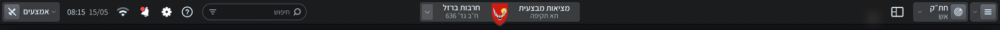
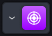
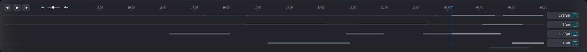

06:00 - 14:00
1
14:01 - 19:00
2
19:01 - 06:00
3
123


אב-טיפוס
גרסה
v1 · מסכים לחיצים
v2 · ממשק אינטראקטיבי
הרחבת תא
א׳ כרטיסייה מורחבת
ללא
עיצוב תא
ברירת מחדל
ג׳-A
ג׳-B
טופס – הוספת שורות
א׳ הוספה אוטומטית
ב׳ כפתור + / −
מה השתנה
איפוס